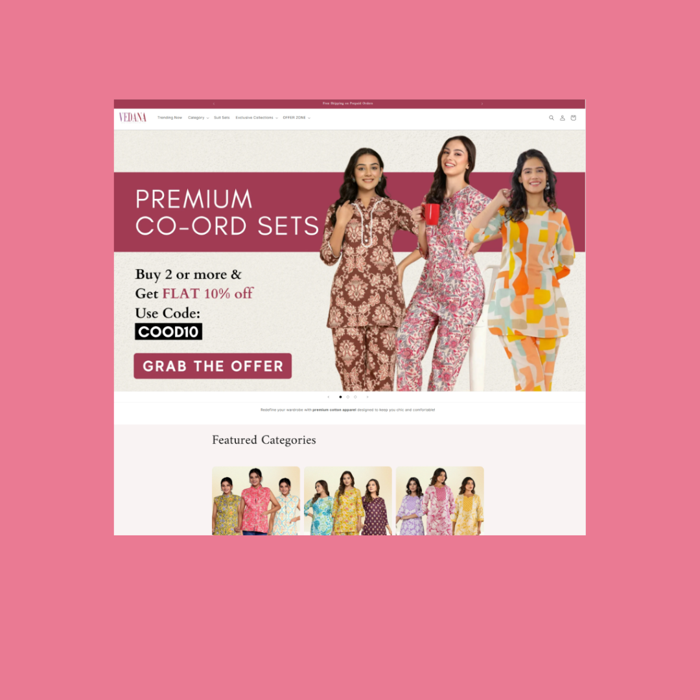
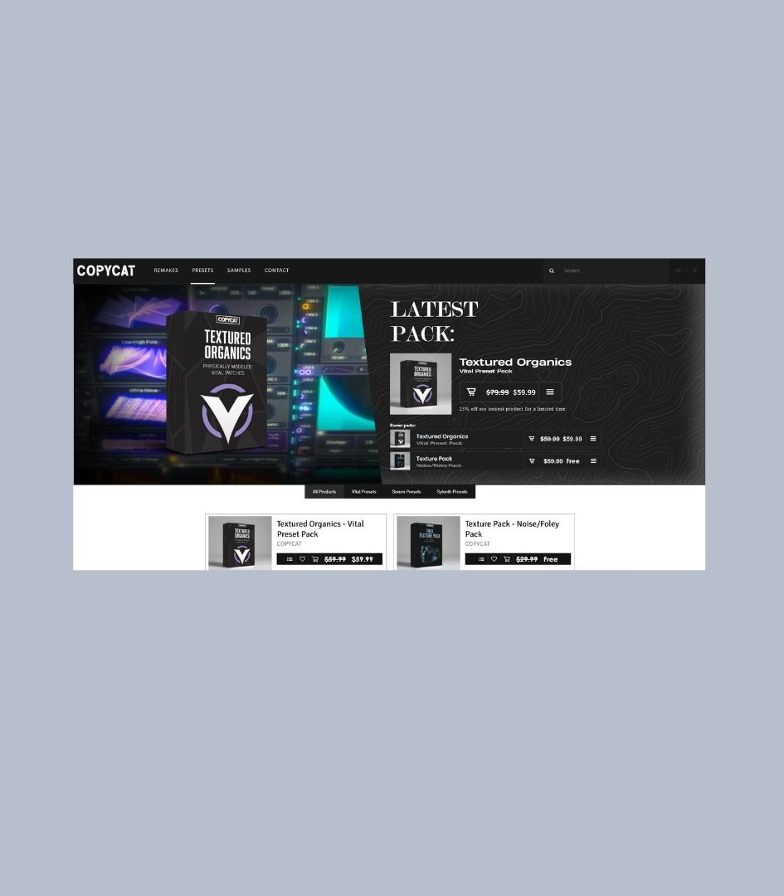
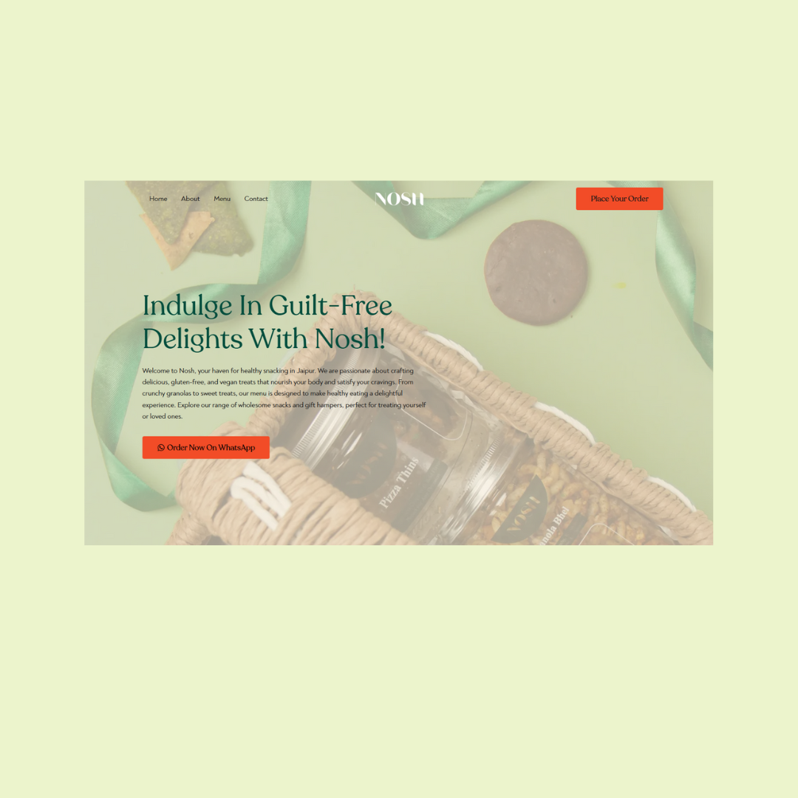

YEAR: 2024
ROLE: FRONT-END DEV AND UI/UX
Ju Space
YEAR: 2025
ROLE: UI/UX, WEBSITE DEV
Tulsi Paper Mill
ROLE: SHOPIFY DEV
Dorimeh
Trendy Aura
Tissli
ROLE: WORDPRESS DEV
Once Upon A Table
SHOPIFY DEV
Crug
Bhandari Plastic
Investment Sahi Hai
ROLE: UI/UX AND DEV
Pro One
ROLE: FRAMER DEV
Jb Marble
xyz gang
ROLE: UI/UX AND WEB DEV
Chaksu Haveli
ROLE: UI/UX AND FRONT-END DEV
Artinnovate
Sway
7colors
Pranseva
Sonkhiya

Mlco.ai
Mahttab


Nosh
Qrious Curators